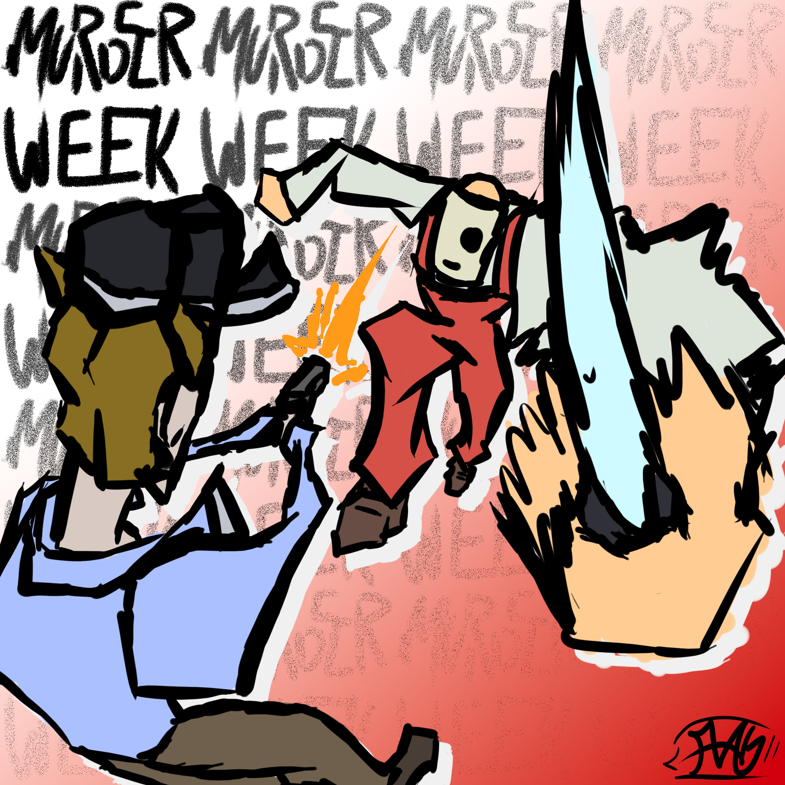
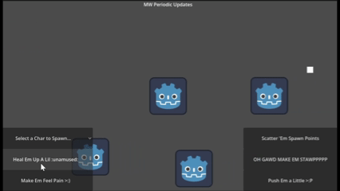
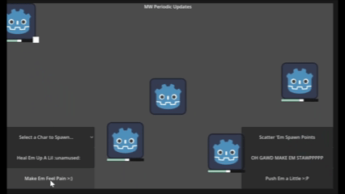
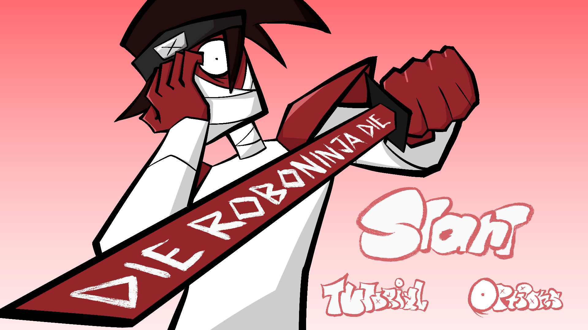
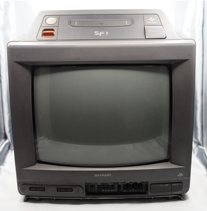
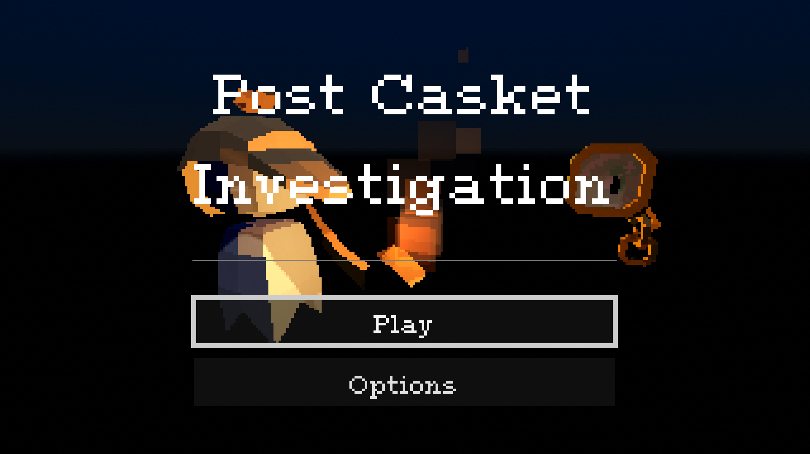
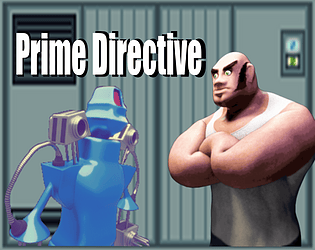

Murder Week (Project MW)
Seven nights this town will never forget.
Role(s)
Programming Lead, Gameplay Programmer, Character Storyteller
Tools Used
Godot - GDScript
Team Size
9 Developers
Production Period
August 2026 - Present
Overview
Murder Week is a game where the player can play as one of seven killers, each representing one of each of the seven deadly sins, whos goal is to eliminate as many civilians as possible before getting caught and apprehended by police officers. Throughout the week, the player can choose which killer they'd like to play as as the game grows in difficulty as more rounds progresses. The game ends when the player is apprehended. To further enhance the difficulty, the player can toggle on modifiers ranging from increasing the number of required civilians to eliminate or the damage of police officers.
My Contributions
- Currently leading four active programmers working across gameplay, UI/UX, and graphics programming, coordinating implementation across multiple areas
- Currently writing character biographies, backstories, and motivations to support the game's narrative and identities of the seven main killers.
Technical Highlights
- Developed an inheritance-driven character system using abstraction and polymorphism to support shared behavior across character types while allowing special interactions with particular characters
- Cerated an NPC lifestyle that initializes characters with information when they spawning while preserving their object reference for future reuse using pooling techniques
- Implmented health bars that appear in response to damage while also showing how much damage they were actually dealth, providing positive reinforcement to the plyaer without hindering the screen of these UI elements.
Current Development Status
Progress on the game is currently moving swiftly. There are issues involving art direction and gameplay that is still needed to be solidified. However, once that is done, it will lead to a much smoother development cycle for future sprints. Additionally, refactors are also beginning to be handed out to several programmers for particular features to suit the needs of the game in a better manner.
Gameplay Clips / Images



DIE ROBONINJA DIE
Hide in trash cans and slash people open!
Role(s)
Gameplay Programmer
Tools Used
Unity, C#
Team Size
3 Developers
Production Period
July 11th, 2026 - July 19th, 2026
Overview
In this game, you play as a ninja who was abducted by members of a bio testing agency to have experients ran on you, and to get your revenge, you eliminate endless waves of their strongest guards.
My Contributions
- Programmed enemy behaviors across movement, pursuit, combat, and death states
- Developed navigation functionality with enemies to help locate the player across connected platforms
- Contributed level design and balancing ideas to support fair encounters and ensure that enemy navigation worked with the intended layout
Technical Highlights
- Implemented a custom enemy pathfinding system in using depth-first search grahs to identify routes toward the player's platform that gets refreshed in intervals
- Developed enemy behaviors for pursuit, wandering, and hiding-spot investigation, integrating navigation with combat and environmental interactions.
- Created a platform-detection system, allowing for level designers to easily place two types of reusable Unity Prefabs (walking and jumping-dropping platforms) to move around
- Implemented a reusable pooling system allowing defeated enemies to be reused and reset instead of requiring new instances of enemies to always spawn in
Project Outcome(s)
- Created my first full-scaled game in Unity using C#
- Created a reusable pooling algorithm and platform navigation system
- Placed 37/54 overall in the associated GameJam based on ratings from the community and other developers
Gameplay Clips / Image


Post Casket Investigation
Investigate where things are, even past death.
Role(s)
Level Designer, UI/UX Designer & Programmer, Sound Designer
Tools Used
Godot - GDScript
Team Size
2 Developers
Production Period
February 27th 2026 - March 1st 2026
Overview
In this game, the player takes the perspective of a ghost detective who's trying to reach a light node in several different levels. In these levels, the player is expected to move and see the world through trial and error and the ghost's monocle, who links to the nearest beacon of light to the player, exposing a minor part of the level to them at a time.
My Contributions
- Designed levels around different gameplay objectives, establishing a more structured approach to level development
- Defined the intended purpose of each level to support the introduction and continuation of the game's mechanics
- Developed the game's UI, creating responsive interactions by using accompanying sound effects
- Created and integrated custom footstep sound effects to further make the player feel immersed in the game's themes
Technical Highlights
- Linked player movement with the looping of playing an audio file using a linked audio player to the scene of any level
- Integrated Godot's Control node system to implement a working UI system, using signals to play certain sound effects given different audio players attached to a given scene
Project Outcome(s)
- Was awarded best art direction in RIT's Game Development Club Spring 2026 GameJam
- Learned more about other approaches to level design, further implimenting it in future projects to ensure a smooth and comfortable experience for the player
Images

Post Casket Investigation
Defend your creator's lab from the forces of good in this top-down, robot, wave, survival shooter.
Role(s)
Project Manager, Narrative Designer
Tools Used
Godot - GDScript
Team Size
4 Developers
Production Period
January 17th 2025 - January 31st 2025
Overview
The player is a robot who's one goal to accomplish to defend a world-renowned artist and scientist while being swarmed by robots sent by the United Nations who were sent to shut down the scientist's plots. Throughout the game, the player can choose different types of weapons that have different behaviors while upgrading themselves, exploring different parts of the lab, and fighting of several different types of enemy robots.
My Contributions
- Coordinated the team's workflow and development priorities to ensure the GameJam's deadline, releasing seven hours ahead of schedule as a result.
- Wrote the game's dialogue and established the foundaiton of it's narrative
- Established creative direction for the voice performances, providing assistance to the voice actors towards the intended tone of the game
Project Outcome(s)
- Released my first game, gaining practicial experience in game design, collaborative develop, and delivering projects under deadlines
- Led my first dedicated team, gaining hands-on experience coordinating teams and managing a game developmne tproject from production through release